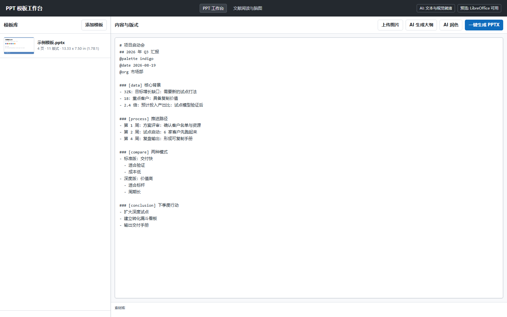
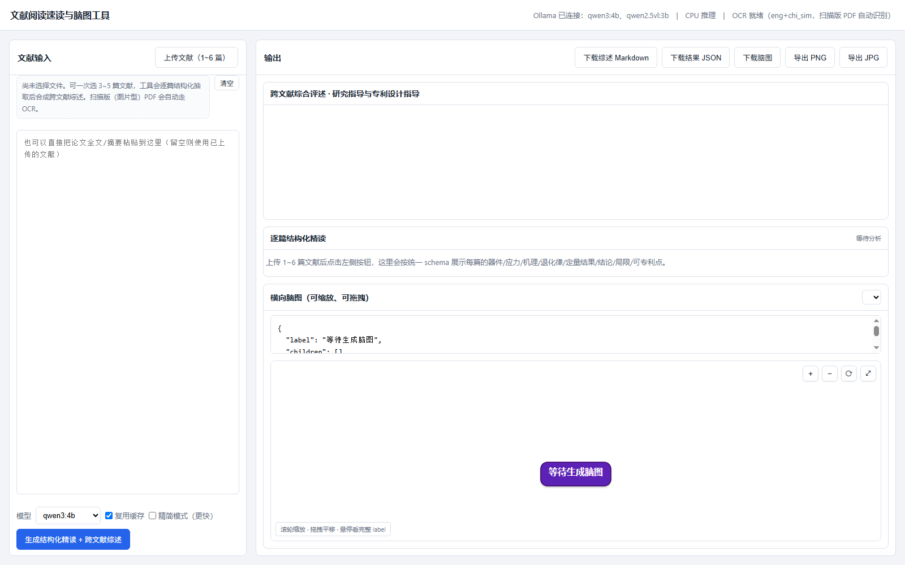

Desktop Tool · Fully Offline
PPT 模板工作台
本地大模型驱动的 PPT 排版工作台：套用你自己的模板，AI 生成大纲与润色，规则引擎产出原生可编辑的 PPTX。附带文献速读与脑图服务——全程离线，数据不出本机。


它解决什么问题
写汇报 PPT 最贵的不是排版，是「把内容组织成正确的页面结构」。本工具让你用结构化大纲描述内容， AI 负责起草与润色，版式引擎按模板真正排版——生成的是原生可编辑对象（文本框、形状、图表、表格）， 不是图片贴片，生成后还能继续改。质量审计会自动检查越界、文本密度和过小图片。
器件领域适配
可靠性评审汇报、立项答辩、客户交付材料这类「结构固定、内容密集」的 PPT 最适合： 数据页摆指标、流程页摆应力序列、时间线页摆认证里程碑。文献速读的精读 schema 就是按器件论文结构定制的——器件类型、应力条件、退化机理、定量结论、局限与可专利点一表对齐。
获取与线上版
本工具为内部授权桌面软件，不在线上公开发布。其交互界面本身就是浏览器形态， 在线体验版正在筹备中（部署到带算力的主机即可对外提供）。 如需体验桌面版或预约线上体验，请联系作者。